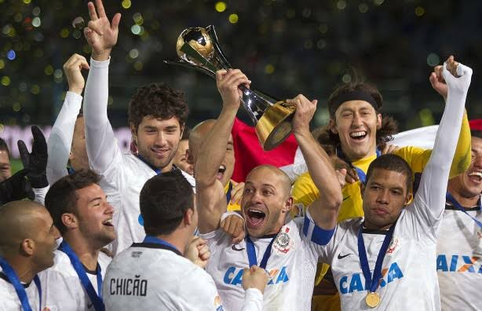

Uma História Escrita com Taças
Internacionais
- Mundial de Clubes da FIFA: 2000 e 2012
- Copa Libertadores da América: 2012 (Campeão Invicto)
- Recopa Sul-Americana: 2013
Nacionais
- Campeonato Brasileiro: 1990, 1998, 1999, 2005, 2011, 2015 e 2017
- Copa do Brasil: 1995, 2002 e 2009
- Supercopa do Brasil: 1991
Estaduais e Regionais
- Campeonato Paulista: 30 títulos (Maior Campeão do Estado)
- Torneio Rio-São Paulo: 1950, 1953, 1954, 1966 e 2002
Estatísticas Históricas
Nível de invencibilidade na Libertadores de 2012 (Eficiência Máxima):
100%
Caminho para o 31º Título Paulista (Progresso de Conquistas - Atual 30):

Conquista do Bicampeonato Mundial de Clubes da FIFA no Japão.
|